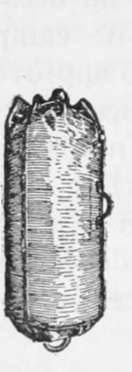
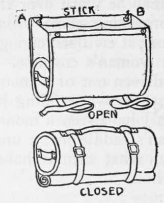
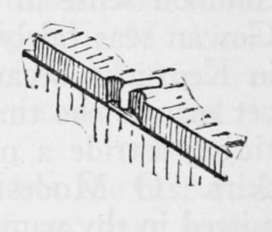
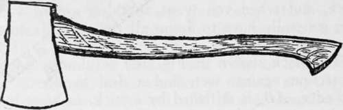
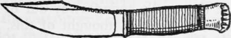

Chapter X. Personal Kits
Description
This section is from the book "Camping And Woodcraft", by Horace Kephart. Also available from Amazon: Camping and Woodcraft.
Chapter X. Personal Kits
When one is going into fixed camp, the best carrier for his personal belongings is a common steamer trunk — a light one, but long enough to take in the fishing rods. For canoe, pack train, or automobile, the kit will be much smaller, of course, and may be carried in one of the bed rolls already described, or in a knapsack, or a dunnage bag, according to circumstances.
Dunnage Bag
A common sailor's bag or " war bag " (simple canvas sack closed by a puckering cord) has the merit of simplicity, but it is not water-tight. If a bag is used for packing, get frorr. a camp outfitter what he calls a duffel bag (Fig. ioo), of waterproof canvas, made with an inside neck or throat-piece that is tied tightly before the outside is closed. Then it will keep the contents dry even if your craft should fill or capsize. It should be about 3 feet long and 12 inches in diameter. Get a good quality, reasonably snag-proof, and with extra-strong seams and handles. If it is to be shipped as baggage, have it fasten with chain and padlock. I would not use a bag at all unless it was perfectly water-tight, for that is its only point of superiority; on the other hand, it is bothersome to pack, and when you want anything out of a bag you generally have to dump all the contents on the ground to find it.
Fig. 100. Dunnage Bag.
Fig. 101. Kit or Provision Pack.
Fig. 102. Screw Hook Fastening for Box Lid.
The pack shown in Fig. 101 is almost as good protection against wet, and a deal handier. The top edge, AB, is stiffened by a stick, to hang it up by in camp, and there are pockets to keep things separated. To close it, fold in the sides, bringing front and back together, roll up, and strap.
Ditty Boxes, Pouches
Everyone will fit up these things to suit himself. When practicable to carry it, I prefer to put my small odds-and-ends in one or two low cigar boxes (the 50-size), with partitions, the lid being secured by a small screw-hook (Fig. 102). Otherwise little bags of cloth or soft leather answer the purpose.
As for pouches to carry on one's person, my reasons tor not liking them will be given under the head of Walking Trips, in Volume II.
Hatchet
A woodsman should carry a hatchet, and he should be as critical in selecting it as in buying a gun. The notion that a heavy hunting knife can do the work of a hatchet is a delusion. When it comes to cleaving carcasses, chopping kindling, blazing thick-barked trees, driving tent pegs or trap stakes, and keeping up a bivouac fire, the knife never was made that will compare with a good tomahawk. The common hatchets of the hardware stores are unfit for a woodsman's use. They have broad blades with beveled edge, and they are generally made of poor, brittle stuff. A camper's hatchet should have the edge and temper of a good axe. It must be light enough to carry in or on one's knapsack, yet it should bite deep in timber. The best hatchet I have used (and it has been with me in the mountains for seven or eight years) is one shown in Fig. 103, except that the handle is a straight one, 17-inch, that I made myself. Its weight, with leather sheath, is 1 lb. 10 oz. With this keen little tool I have cut many a cord of the hardest woods — hickory, oak, dogwood, beech, etc.— up to young trees eight or more inches thick, often laying in a winter night's wood with it. (The way to learn chopping is to go slow, give all your attention to making every blow tell just where it is needed, and don't strike too hard).
Fig. 103. Hatchet.
Sheath Knife
On the subject of hunting knives I am tempted to be diffuse. In my green and callow days I tried nearly everything in the knife line from a shoemaker's skiver to a machete, and I had knives made to order. The conventional hunting knife is, or was until recently, of the familiar dime-novel pattern invented by Colonel Bowie. It is too thick and clumsy to whittle with, much too thick for a good skinning knife, and too sharply pointed to cook and eat with. It is always tempered too hard. When put to the rough service for which it is supposed to be intended, as in cutting through the ossified false ribs of an old buck, it is an even bet that out will come a nick as big as a saw-tooth — and Sheridan forty miles from a grindstone! Such a knife is shaped expressly for stabbing, which is about the very last thing that a woodsman evei has occasion to do, our lamented grandmothers to the contrary notwithstanding.
Many hunters do not carry sheath knives, saying (and it is quite true) that a common jackknife will skin anything from a squirrel to a bear. Still, I like a small, light sheath knife. It is always open and " get-at-able," ready not only for skinning game and cleaning fish, but for cutting sticks, slicing bread and bacon and peeling " spuds." It saves the pocket knife from wet and messy work, and preserves its edge for the fine jobs.
For years I used knives of my own design, because there was nothing on the market that met my notion of what a sensible, practical sheath knife should be; but we have it now in the knife here shown (Fig. 104). It is of the right size (4 1/2-inch blade), the right shape, and the proper thinness. I ground the front part of the back of mine to a blunt bevel edge for scaling fish and disarticulating joints. The sheath being flimsy, and the buttoned band a nuisance, I made one of good leather that binds well up on the handle and is fastened together with copper rivets besides the sewing.
Fig. 104. Sheath Knife.
Continue to: